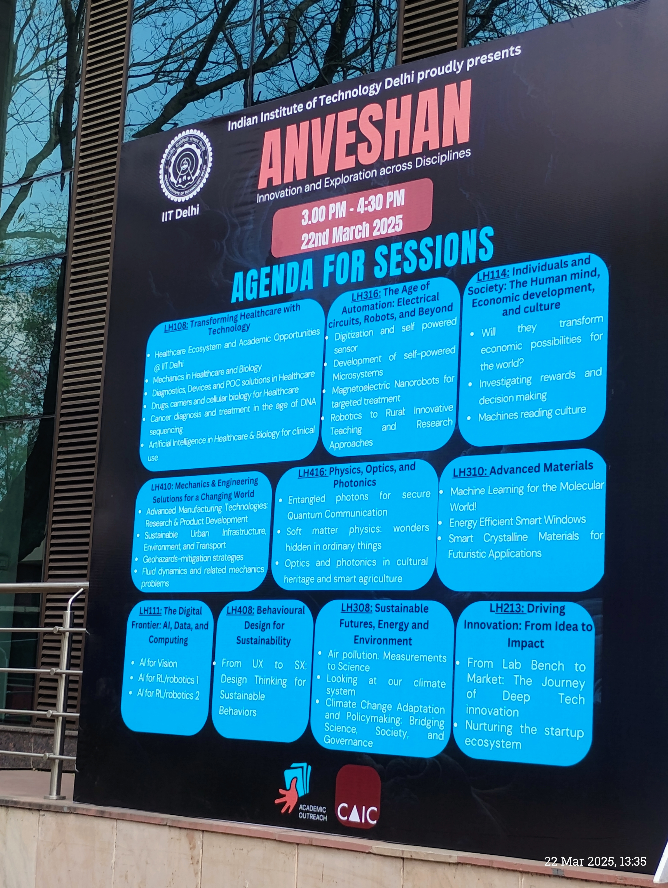
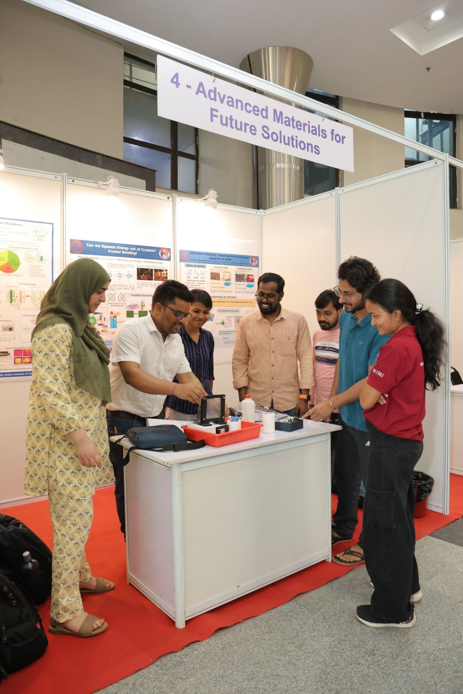
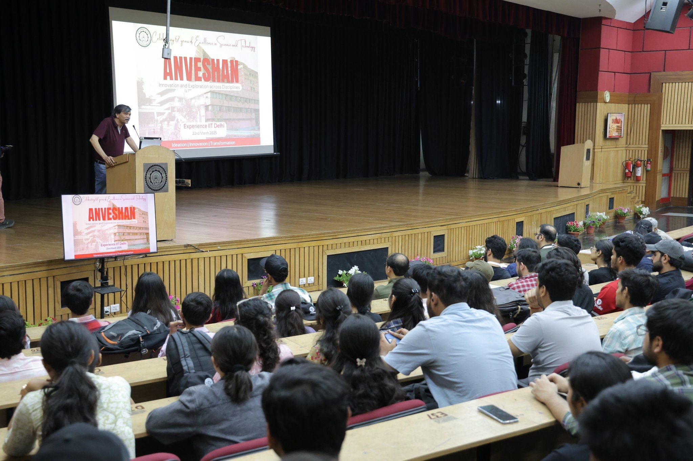
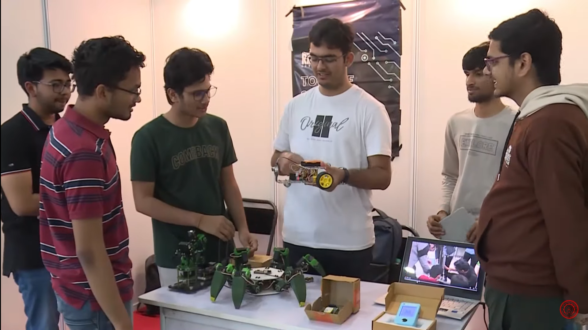
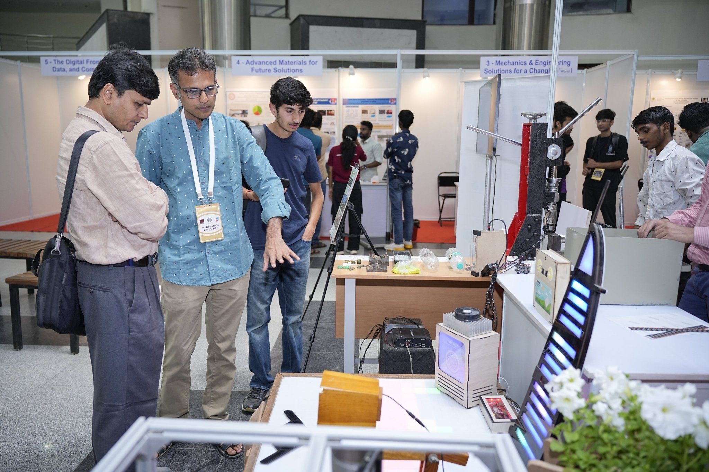
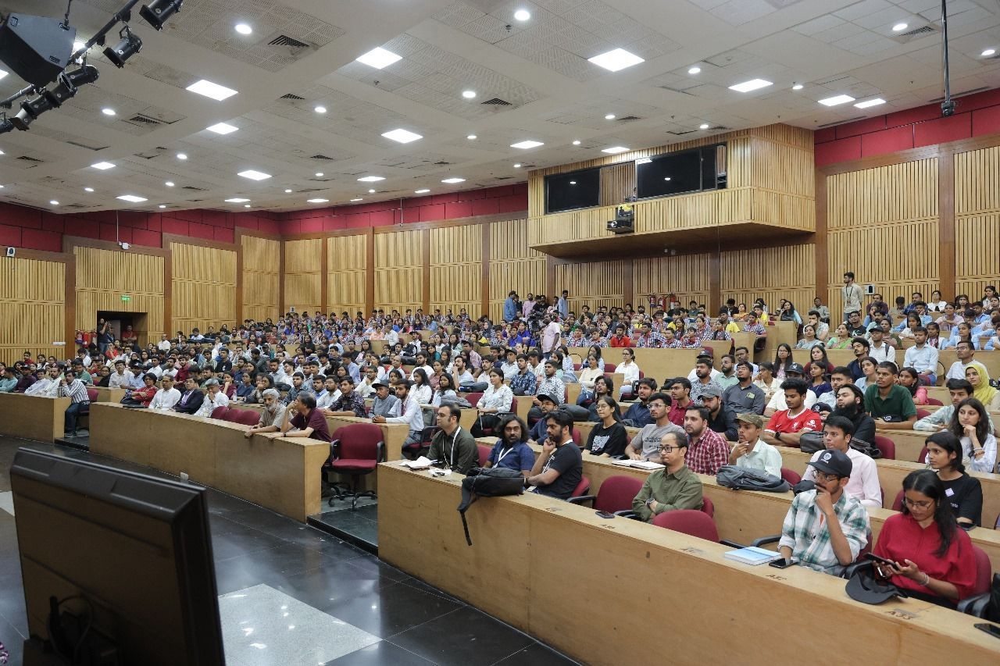

On 22nd March 2025, I had the wonderful opportunity to visit IIT Delhi for the Anveshan program, an event that showcases innovation, creativity, and science. Our teacher gave us a task to write a blog on any topic of our choice — and I chose this event. I registered for it on my own and got to witness a full day of learning, exploring new ideas, and watching technology come alive in front of my eyes.


The event begun with Dr. Rangan Banarjee Director of IITD, he welcomed us and than introduced us with the purpose of this event he explained that this event is to experience IITD programms to look into your interests and pick up particular programm in which you are interested and to explore the world of science and technology. He also mentioned that this event is not just for students but also for teachers and parents to understand the importance of science and technology in our lives. After that we were free to choose what lecture we want to attend from the agenda I picked up The Age of Automation: Electrical Circuits, Robots, and Beyond

The event began with a lecture on The Age of Automation: Electrical Circuits, Robots, and Beyond . The speaker explained how robots are made, how sensors work, and how circuits play an important role in controlling machines. I learned that robots are not just science fiction anymore – they are being used in many real-world areas like hospitals, industries, and even homes!

After the lecture, we explored the exhibition area where students from IIT Delhi were presenting their innovative projects.
One of the stalls was demonstrating how plastic key cards can be made using waste plastic bottles. This was a smart idea to reduce plastic waste and reuse it in a productive way.
Another team had built a small Formula 1 car powered by electric batteries. The design was sleek, and they told us it was sponsored by Tesla. It was fascinating to see how students built such a complex project.

There was also a 3D printer on display. I watched it printing small parts layer by layer using plastic. It felt like magic, but it was all science and programming!
I also visited a section titled “Advanced Materials for Future Solutions”. Students explained how they are researching new materials to make better batteries, stronger structures, and energy-efficient systems. Their posters and models helped me understand how science is used to solve problems in real life.

My visit to Anveshan was a truly unforgettable experience. I saw how students are applying what they learn in classrooms to real-life projects. It made me more curious about robotics, electronics, and innovation. The best part was how friendly and passionate the students were – they were happy to explain their work and inspire others.
🎓 IIT Delhi Programs at a Glance:
📘 Ph.D. Program World-class research across disciplines; solve real-world problems through deep scientific inquiry.
🌞 Summer Research Fellowship (SRFP) 2-month summer research for undergraduates with IIT Delhi professors.
🔬 School of Interdisciplinary Research (SIRe) Bridges engineering, science, and humanities to solve complex, cross-disciplinary challenges.
🧪 MS (by Research) Research-intensive master’s program for innovation-focused candidates.